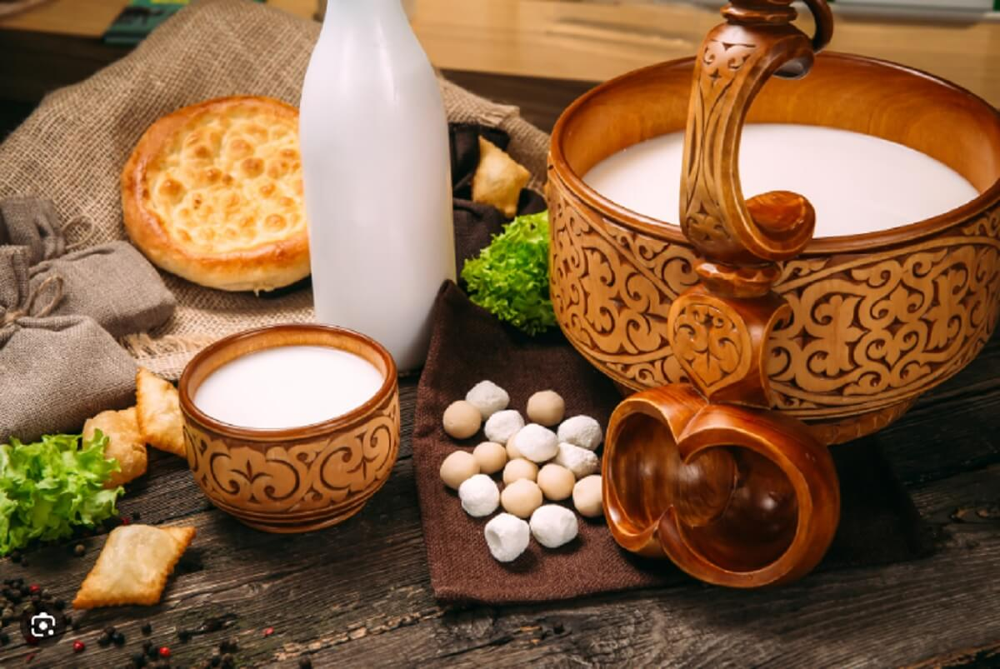

Beshbarmak
Tender cuts served over broad homemade pasta ribbons with rich, savory onion broth.
From ancient nomadic civilizations of the Great Steppe and flourishing Silk Road cities to the founding of the Kazakh Khanate and modern independence, explore the shared heritage uniting all of Kazakhstan.
Master horsemen and goldsmiths roamed the Eurasian steppe, leaving behind royal burial mounds (kurgans) and the iconic Golden Warrior (Altyn Adam), now a national symbol of Kazakhstan.
Caravan cities such as Turkistan, Otrar, Taraz, and Saraishyk connected East and West, fostering trade, science, philosophy (Al-Farabi), and architectural masterpieces like the Mausoleum of Khoja Ahmed Yasawi.
Kerey Khan and Zhanibek Khan established the Kazakh Khanate, uniting the tribes across the vast territory from the Caspian Sea to the Altai Mountains with a shared language, dombra music, and nomadic code of laws.
Kazakhstan proclaimed its independence in December 1991, embarking on nation-building, global nuclear non-proliferation leadership, and transferring the national capital from Almaty to Astana in 1997.
Today's Kazakhstan preserves its sacred nomadic hospitality, eagle hunting, and UNESCO World Heritage sites while welcoming global travelers to futuristic cities, spaceports, and national parks.
A few Kazakh words go a long way. Press Copy to save a phrase and paste it into a translator or a message.
Сәлеметсіз бе!
Salemetsiz be! · Hello (polite)
Рақмет!
Rakhmet! · Thank you
Қош келдіңіз!
Qosh keldiñiz! · Welcome
Қалайсыз?
Qalaisyz? · How are you?
Бұл қанша тұрады?
Bul qansha turady? · How much is this?
Сау болыңыз!
Sau bolyñyz! · Goodbye
112
Unified emergency line
103
Ambulance
102
Police
101
Fire service
Hearty, comforting dishes made for family feasts and cold winters:
Tender cuts served over broad homemade pasta ribbons with rich, savory onion broth.

Golden, airy fried dough spheres served steaming hot alongside milk tea.

Sun-dried tangy cheese curds and nourishing fermented milk drinks of the nomads.